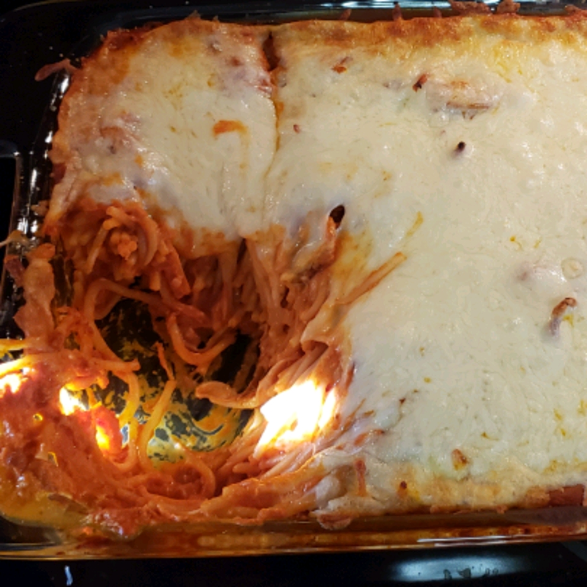

Baked Spaghetti

Description
A delicious and easy comfort dinner that the whole family will love! Made with spaghetti sauce, mozzarella and cream cheese.
Ingredients
-
1 (16 ounce) package uncooked spaghetti
-
2 (24 ounce) cans of Traditional Spaghetti sauce
-
2 cups mozzarella cheese
-
1 (8 ounce) package cream cheese
Steps
-
Preheat oven to 350 degrees F (175 degrees C)
-
Bring a large pot of lightly salted water to a boil. Cook spaghetti in the boiliing water, stirring occasionally until cooked through but firm to the bite, about 12 minutes. Drain.
-
Heat the sauce in the saucepan over medium heat. Add the cream cheese and stir until melted. Pour pasta and sauce into an oven-safe baking dish and mix well.
-
Bake for 30 minutes. Remove from oven and top with mozzarella cheese. Bake until the sauce is thick and the cheese in melted, 10 to 15 minutes.